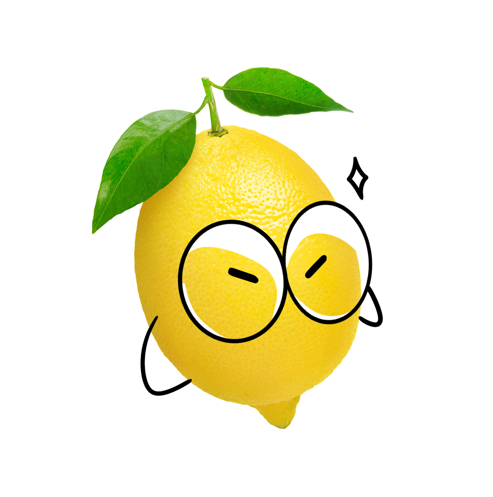
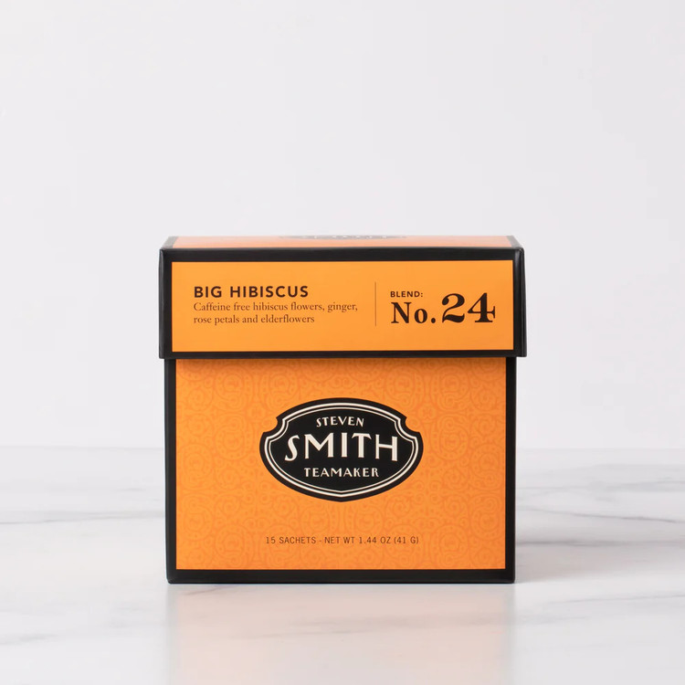

톡 쏘는 레몬
이게 최선인가요? (- -)+
날카롭고 예리한 당신!
조용하고 논리적으로 판단하여 상황을 직시합니다.
이렇게 철두철미하고 현실적인 부분 때문에 사람들에게
경계심이 높고 비밀이 많지만,
막상 친해지면 당신을 재밌어하는 사람들이 많죠.
시원시원하게 생각하는 당신과 꼭 알맞는,
차를 추천해드릴게요.
추천 차
SMITH - Big Hibicus
(teabags, noncaffeine)
히비스커스에 인도 사르사,생강,분홍장미,꽃잎으로 다양한 풍미를 더한 가향차예요.
히비스커스의 기분 좋은 신맛이 주는 새콤달콤함에 생강의 쌉쌀하고 따뜻한 기운과 잘 어울려요
히비스커스의 시원함과 생강의 은은한 달콤함이 당신과 꼭 어울려요!